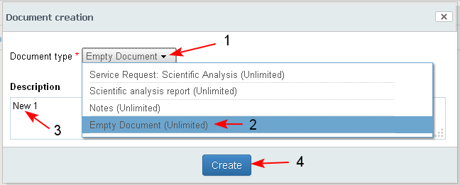
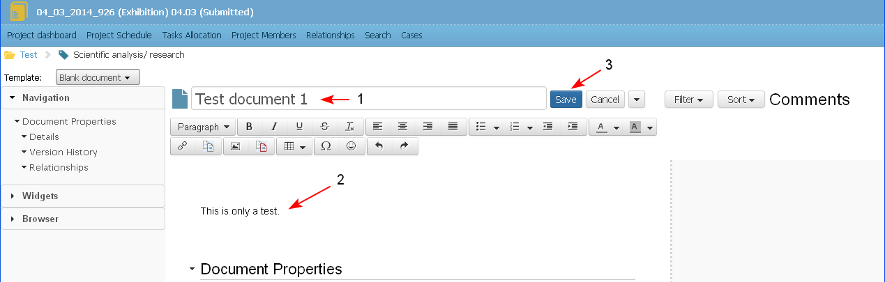
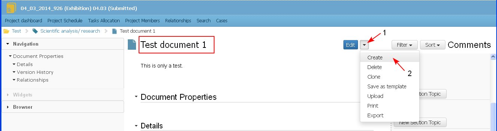

A new iDoc is created either by selecting an existing template or from scratch.
To create a new iDoc in a case the user should have the necessary permissions.
- The user selects the action "Create Document" from:
- Case Details/ Documents Tab/ "Create Document" action (1-2-3) of a selected document section of a selected case.
- Project/ Documents Library section/ "Create Document" action in each document folder. (TBD)

- The system opens a screen with a list of the available templates for the project/ case..
In the list with templates there could be a template with a name "Empty Document" - this is a document with only a few default widgets. The Empty document is also a start point for creation of other templates and could be different for the different organizations.
The user selects a template from the list (1-2), enters a description of the new document (3) and clicks the button "Create" (4).

The system opens the screen for document creation. By default the primary template for the selected document type is loaded when the document is selected for creation.
- the user may select another template from the list with templates (1-2) with sections and widgets as the ones predefined in the selected template.

The user could insert new widgets/ sections, delete existing widgets/ sections in the template, change formatting etc. (For details see iDoc Content Management topics).
The screen is divided into 3 parts:
- Document Tree View (1) - in the left part of the screen, where each section from the document content is displayed. The user could navigate in the document content by just selecting a section from the tree view.
- Document Content (2) - in the middle part of the screen, where the user could manage the document content by adding/ removing text sections and widgets, entering a text with the free text editor, inserting links to other objects, etc. (For details see iDoc Content Management). The template selected by the user (here "Empty Document") is loaded into this part.
- Comments (3) - in the right part of the screen. Here the user is able to create and view comments on the document as an object and each one of its sections. The section is empty with the document creation.
The empty document has a default section with the following widgets in it:
- Document identification (or Title) widget (4) – the widget contains the ID, Title, creator and date of creation of the document, version number (new document is created with version 0.1).
- Text editor (5) - the default section has a text editor in it
- Document Properties (6) widget – the section contains selected attributes of the document (Title, Description, Type, Created from, Created on, Last modified from, Last modified on, etc) (7). In the section there is a link "View more ..." and the user could review all attributes of a document. The user is able to edit some of the properties in the section (10) depending on his/her permissions.
- Version History widget (8) – the section contains information for version number, date of creation, created by, description of change. The document version is displayed as a link, and when the link is selected the history version of the document is opened for review. The section is empty with document creation.
- Relationships widget (9) - the section contains information for all objects, related with the document, no matter what is the relationship type (parent/ child, peer-to-peer).

- The user enters a title of the document from the Title section (1) or from the Properties section. The document could not be saved if the Title field is empty.
There is no restriction in title uniqueness. Documents with the same title may exist in the system.
The user enters text using the text editor (2) and saves the document (3) or cancels the operation. For details see Save iDoc and Cancel iDoc topics.

- The new iDOC is created with sections and widgets as the ones predefined in the template. All changes in the document content are also saved in the corresponding sections (1-2).
The system has automatically filled in the data in the sections Details (3), Version History (4), Relationships (5).
When a new iDoc is created and saved for first time, the following properties in the document Properties section are set automatically:
- Unique ID - the unique document identifier in the system
- Title - If the user does not change the title form the "Properties" section, the title of the document is set automatically to the name of the template.
- Created by - the user who created the document
- Created on - the date and time the document has been created
- Version - the version of the document is set to 1.0

- The user could insert new widgets/ sections, delete existing widgets/ sections in the template, change formatting etc. (For details see iDoc Content Management topics).
- The created iDoc is visible in the corresponding document section of the case (1-2-3).

- The user could create a new iDod as a sub-document of an existing iDoc.
- Create document action is active only for documents in Preview mode
- The user selects, while in an iDoc, form the title section Actions/ Create Document (1-2).

- When the user selects the Create document button a screen with available templates opens, the user enters the necessary data and saves the document.
- The two documents are in parent-child relationship
An iDoc could have unlimited number of children iDocs (grand-children, etc.)
TBD: The user would be able to select templates both from public list or from his private lists with templates. The public templates are the ones created for company wide use, while the private templates are those created by the user either by modifying existing templates or creating new ones. (Private templates to be added in the requirements).
TBD: We could make setting on project level which public templates to be visible for which project - this is in case that there are projects in different areas and not to confuse the user with too many templates.